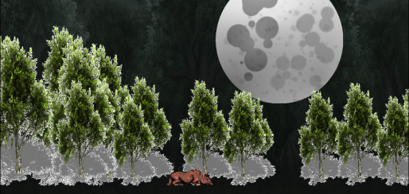

THE WOLF



THE WOLF tells the story of the hard work that happens continuous -secretly- in the night. It follows a
lone wolf. Solitarily confronting the struggles of life. The piece evokes feelings of loneliness and the
dark creeping feeling you have in the back of your mind late at night.
For comfort, the wolf only has a single friend - the moon in the background.
But that is just where this story begins. THE WOLF evolves over time and tells a beautiful story. However, the full story is only available to the owner of the piece. They alone decide if they should share the wolf’s current adventures or keep them hidden.
This is the first piece of Infinite Animation ever generated and it really showcases the depth of the platform. The artist meticulously determining code for every element of the piece. Furthermore the piece showcases several of the propriety tools characteristic of the MIMICRY platform. The probability distribution function added to the trees allowing the change of season to be different; yet still follow a yearly pattern. The random actions of the wolf at any given moment that mimic the spontaneity of life itself. Furthermore, it utilizes interactions with the blockchain – each interaction affecting the final art.
For comfort, the wolf only has a single friend - the moon in the background.
But that is just where this story begins. THE WOLF evolves over time and tells a beautiful story. However, the full story is only available to the owner of the piece. They alone decide if they should share the wolf’s current adventures or keep them hidden.
This is the first piece of Infinite Animation ever generated and it really showcases the depth of the platform. The artist meticulously determining code for every element of the piece. Furthermore the piece showcases several of the propriety tools characteristic of the MIMICRY platform. The probability distribution function added to the trees allowing the change of season to be different; yet still follow a yearly pattern. The random actions of the wolf at any given moment that mimic the spontaneity of life itself. Furthermore, it utilizes interactions with the blockchain – each interaction affecting the final art.
In addition to the overarching story that is told only to the owner. The piece also, at random, can
spawn up to 10 one-time scenes over its lifetime. The probability that a one-time scene plays is low so
the longer one holds the piece, the higher the chance they will receive a rare minted 2nd gen NFT.
As the name suggests, each scene will only play one time inside the original artwork. It will then be frozen and minted as a standalone NFT on the blockchain. The current owner of THE WOLF will own this new NFT and can choose to display it or hold it privately in their own collection.
As the name suggests, each scene will only play one time inside the original artwork. It will then be frozen and minted as a standalone NFT on the blockchain. The current owner of THE WOLF will own this new NFT and can choose to display it or hold it privately in their own collection.
DISTRIBUTION